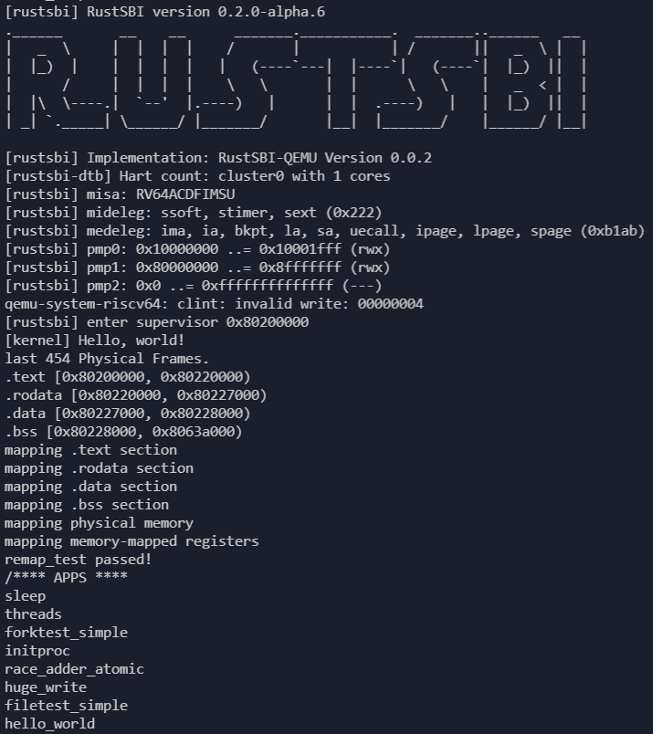
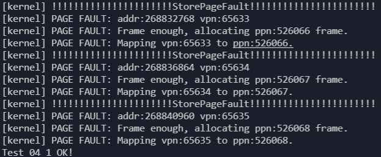
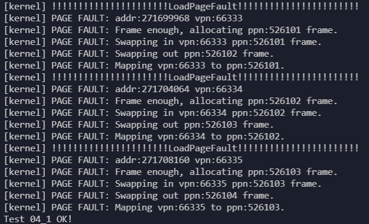
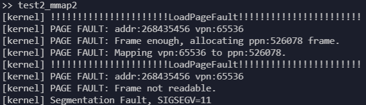
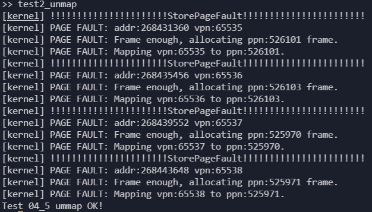

页面置换介绍
改写自ucore step by step和rCore-Tutorial-Book-v3。
页面置换
操作系统为何要进行页面置换呢？这是由于操作系统给用户态的应用程序提供了一个虚拟的“大容量”内存空间，而实际的物理内存空间又没有那么大。所以操作系统就就“瞒着”应用程序，只把应用程序中“常用”的数据和代码放在物理内存中，而不常用的数据和代码放在了硬盘这样的存储介质上。如果应用程序访问的是“常用”的数据和代码，那么操作系统已经放置在内存中了，不会出现什么问题。但当应用程序访问它认为应该在内存中的的数据或代码时，如果这些数据或代码不在内存中，则根据上一小节的介绍，会产生页访问异常。这时，操作系统必须能够应对这种页访问异常，即尽快把应用程序当前需要的数据或代码放到内存中来，然后重新执行应用程序产生异常的访存指令。如果在把硬盘中对应的数据或代码调入内存前，操作系统发现物理内存已经没有空闲空间了，这时操作系统必须把它认为“不常用”的页换出到磁盘上去，以腾出内存空闲空间给应用程序所需的数据或代码。
操作系统迟早会碰到没有内存空闲空间而必须要置换出内存中某个“不常用”的页的情况。如何判断内存中哪些是“常用”的页，哪些是“不常用”的页，把“常用”的页保持在内存中，在物理内存空闲空间不够的情况下，把“不常用”的页置换到硬盘上就是页替换算法着重考虑的问题。容易理解，一个好的页替换算法会导致页访问异常次数少，也就意味着访问硬盘的次数也少，从而使得应用程序执行的效率就高。
页面置换算法
局部页面置换算法
一般局部页面置换算法有以下几种：
先进先出(First In First Out, FIFO)页替换算法
该算法总是淘汰最先进入内存的页，即选择在内存中驻留时间最久的页予以淘汰。只需把一个应用程序在执行过程中已调入内存的页按先后次序链接成一个队列，队列头指向内存中驻留时间最久的页，队列尾指向最近被调入内存的页。这样需要淘汰页时，从队列头很容易查找到需要淘汰的页。
FIFO 算法只是在应用程序按线性顺序访问地址空间时效果才好，否则效率不高。因为那些常被访问的页，往往在内存中也停留得最久，结果它们因变“老”而不得不被置换出去。FIFO 算法的另一个缺点是，它有一种异常现象（Belady 现象），即在增加放置页的物理页帧的情况下，反而使页访问异常次数增多。
最久未使用(least recently used, LRU)算法
利用局部性，通过过去的访问情况预测未来的访问情况，我们可以认为最近还被访问过的页面将来被访问的可能性大，而很久没访问过的页面将来不太可能被访问。于是我们比较当前内存里的页面最近一次被访问的时间，把上一次访问时间离现在最久的页面置换出去。
时钟（Clock）页替换算法
是 LRU 算法的一种近似实现。时钟页替换算法把各个页面组织成环形链表的形式，类似于一个钟的表面。然后把一个指针（简称当前指针）指向最老的那个页面，即最先进来的那个页面。另外，时钟算法需要在页表项（PTE）中设置了一位访问位来表示此页表项对应的页当前是否被访问过。当该页被访问时，CPU 中的 MMU 硬件将把访问位置“1”。当操作系统需要淘汰页时，对当前指针指向的页所对应的页表项进行查询，如果访问位为“0”，则淘汰该页，如果该页被写过，则还要把它换出到硬盘上；如果访问位为“1”，则将该页表项的此位置“0”，继续访问下一个页。该算法近似地体现了 LRU 的思想，且易于实现，开销少，需要硬件支持来设置访问位。时钟页替换算法在本质上与 FIFO 算法是类似的，不同之处是在时钟页替换算法中跳过了访问位为 1 的页。
改进的时钟（Enhanced Clock）页替换算法
在时钟置换算法中，淘汰一个页面时只考虑了页面是否被访问过，但在实际情况中，还应考虑被淘汰的页面是否被修改过。因为淘汰修改过的页面还需要写回硬盘，使得其置换代价大于未修改过的页面，所以优先淘汰没有修改的页，减少磁盘操作次数。改进的时钟置换算法除了考虑页面的访问情况，还需考虑页面的修改情况。即该算法不但希望淘汰的页面是最近未使用的页，而且还希望被淘汰的页是在主存驻留期间其页面内容未被修改过的。
这需要为每一页的对应页表项内容中增加一位引用位和一位修改位。当该页被访问时，CPU 中的 MMU 硬件将把访问位置“1”。当该页被“写”时，CPU 中的 MMU 硬件将把修改位置“1”。这样这两位就存在四种可能的组合情况：（0，0）表示最近未被引用也未被修改，首先选择此页淘汰；（0，1）最近未被使用，但被修改，其次选择；（1，0）最近使用而未修改，再次选择；（1，1）最近使用且修改，最后选择。该算法与时钟算法相比，可进一步减少磁盘的 I/O 操作次数，但为了查找到一个尽可能适合淘汰的页面，可能需要经过多次扫描，增加了算法本身的执行开销。
全局页面置换算法
上述局部页面置换算法没有设计动态调整某任务拥有的物理内存大小（也称页帧数，Frame Number）。如果置换策略能动态调整任务拥有的物理内存大小，则可以在系统层面对其他任务拥有的物理内存产生影响。下面介绍的全局置换策略就具有这样的特征。
全局页面置换算法有以下两种：
工作集置换算法
计算机科学家Denning在二十世纪六十年代就发现，大多数程序都不是均匀地访问它们的地址空间，而不同时间段的访问往往是集中在不同的小部分页面中。在程序执行的任一时刻，都存在一个动态变化的页面集合，它包含所有最近内存访问所访问过的页面。这个集合其实就是工作集（working set）。
理解工作集置换策略的前提是先理解工作集的定义。一个任务当前正在使用的页面集合称为它的工作集（working set，也称驻留集合）。如果整个工作集都被装入到了内存中，那么任务在运行到下一运行阶段之前，一般不会产生很多缺页中断。若内存太小而无法容纳下整个工作集，那么任务在后续运行过程中可能会产生大量的缺页中断，导致执行变慢。
注意，上述工作集的概念和对缺页中断的推断，其实是建立在程序执行具有局部性这个基础上的，也是一种根据历史来推测未来的启发式方法。为了基于工作集的特征来设计置策略，我们需要量化工作集的概念。在t时刻，任务最近n次内存访问均发生在m个页面集合上，那么这个页面集合就是任务在t时刻最近k次内存访问下的工作集，用 w(k,t) 来表示。工作集中页面数量用 |w(k,t)| 表示。 随着任务的执行，工作集中的页面会发生变化，其数量也会发生变化。如果一个任务占用的页面数与其工作集大小相等或超过工作集，则该任务可在一段时间内不会发生缺页异常。如果其在内存的页面数小于工作集，则发生缺页中断的频率将增加。
所以，工作集置换策略的目标就是动态调整工作集的内容和大小，一个任务占用的页面数接近其工作集大小，减少缺页异常次数。实现工作集置换策略的基本思路是，操作系统能及时跟踪任务执行中位于工作集中页面，然后在发生缺页异常或过了一段时间间隔时，淘汰一个不在工作集中的页面，如果缺页异常就换入位于交换区中的页。
实现工作集置换策略的调整是及时获取工作集信息。有了工作集的定义并不意味着存在一种工程上可接受的有效方法，能够在程序运行期间及时准确地计算出工作集。
如果暂时不计考虑硬件上的工程成本，我们可以在处理器上添加一个长度为k的移位寄存器，当前处理器每进行一次内存访问就把寄存器左移一位，然后在最右端插入刚才所访问过的页面号。这样把移位寄存器中的k个页面号按访问时间排序，并去除老的重复页面，形成的集合就是工作集。然而，维护移位寄存器并在缺页中断时处理它所需的开销很大，因此该技术仅仅停留在理论上。
其实，我们也可以参考近似LRU策略，提出近似工作集置换策略。一种可行的近似方法是，不向后找最近k次的内存访问，而改为查找一段固定时间被访问的页面。比如，工作集即是一个任务在过去τ时间段中的内存访问所用到的页面集合。在一般情况下，对于过去τ时间段的具体值是基于经验设置的，如10ms。这里，我们可以根据页面对应页表项的访问位来判断该页在过去τ时间段中是否被访问，如果该位为 “1” ，表示该页被访问，属于工作集，否则就不属于工作集。当然这种近似方法对工作集的跟踪比较粗略，我们可以建立每个访问页的时间戳链表，得到更准确的工作集信息，但这样的执行开销和空间成本就大了。
当缺页中断发生后，需要扫描整个页表才能确定被淘汰的页面，因此基本的工作集置换策略是比较费时的。Carr和Hennessey在1981提出了一种基于时钟信息的改进的工作集置换策略，称为WSClock（工作集时钟）置换策略。由于它实现简单，性能较好，所以在实际工作中得到了广泛应用。该策略首先要建立一个以页框为元素的空的循环表。当操作系统加载第一个任务访问的页面后，把对应的页面信息加到该表中。随着更多页面的加入，它们形成一个更大容量的循环表，其中每个表项包含来自基本工作集置换策略中记录的上次使用时间和访问位信息（由处理器硬件置一，表示访问该页）。
每次缺页中断时，WSClock置换策略首先检查指针指向的页面，如果指针指向的页面的存在位为1，表示该页面在当前时钟滴答中就被使用过，那么该页面就不适合被淘汰。然后把该页面的存在位置为0，并指针指向下一个页面，重复扫描循环表。如果指针指向的页面存在位为0，再进一步检查该页面的生存时间大于τ，那它就不在工作集中，是属于被淘汰的页。
缺页率置换算法
在上面的各种置换策略中，或多或少涉及到对页面访问时间的记录和查找，排序等操作，开销很大。而置换策略的目标是减少缺页次数或缺页率。缺页率置换策略就是一种直接根据缺页率的变化来动态调整任务的物理内存大小的方法。如果缺页率高了，就增加任务占用的物理内存，如果缺页率低了，就减少任务占用的物理内存。任务占用的物理内存也称常驻集，即当前时刻，任务实际驻留在内存中的页面集合。
那如何计算缺页率呢？ 缺页率的定义如下：
缺页率（page fault rate）= 缺页次数 / 访存次数
要得到缺页率的精确值比较困难，主要是访存次数难以精确统计。我们可以采用一种近似的方法来表示缺页率。从上次缺页异常时间Tlast 到现在缺页异常时间Tcurrent 的时间间隔作为缺页率的当前指标。并用一个经验值Ts表示适中的缺页率。
这样，缺页率置换策略的基本思路就是：在任务访存出现缺页时，首先计算从上次缺页异常时间Tlast 到现在缺页异常时间Tcurrent 的时间间隔。然后判断，如果 Tcurrent – Tlast > Ts, 则置换出在 [Tlast , Tcurrent ] 时间内没有被引用的页，并增加缺失页到工作集中；如果 Tcurrent – Tlast ≤ Ts, 则只增加缺失页到工作集中。
在上述思路描述中，
- Tcurrent – Tlast > Ts 表示缺页率低了，通过置换出在 [Tlast , Tcurrent ] 时间内没有被引用的页，来减少任务的常驻集。
- Tcurrent – Tlast ≤ Ts 表示缺页率高了，需要增加任务的常驻集。
- 页是否被引用是根据任务访问的内存页对应的页表项的存在位信息来判断的。
Belady异常现象
计算机科学家Belady及其同事在1969年左右在研究FIFO置换策略是，发现了一个有趣的现象，对于一个内存访问序列：1，2，3，4，1，2，5，1，2，3，4，5，当物理页帧数从3增加为4时，访存命中率反而下降了。
我们通常理解，当一个任务的物理页帧数量变大时，访存的命中率是会提高的。但在上面的例子中，命中率反而下降了。这种异常现象被后人称为Belady异常（Belady’s Anomaly）。
而其他一些策略，比如LRU置换，最优置换等，就不会遇到这个问题。其原因是，LRU等具有栈特性（stack property），即数量为 m+1 的物理页帧一定包括数量为 m 的物理页帧的数据内容。因此，当增加物理页帧数量时，访存命中率至少保证不变，且由可能提高。而FIFO策略、时钟策略等没有栈特性，因此可能出现异常行为。
页面置换机制
如果要实现页面置换机制，只考虑页替换算法的设计与实现是远远不够的，还需考虑其他问题：
- 哪些页可以被换出？
- 一个虚拟的页如何与硬盘上的扇区建立对应关系？
- 何时进行换入和换出操作？
- 如何设计数据结构以支持页替换算法？
- 如何完成页的换入换出操作？
可以被换出的页
在操作系统的设计中，一个基本的原则是：并非所有的物理页都可以交换出去的，只有映射到用户空间且被用户程序直接访问的页面才能被交换，而被内核直接使用的内核空间的页面不能被换出。
这里面的原因是什么呢？操作系统是执行的关键代码，需要保证运行的高效性和实时性，如果在操作系统执行过程中，发生了缺页现象，则操作系统不得不等很长时间（硬盘的访问速度比内存的访问速度慢 2~3 个数量级），这将导致整个系统运行低效。而且，不难想象，处理缺页过程所用到的内核代码或者数据如果被换出，整个内核都面临崩溃的危险。并且操作系统内核运行在S态，在rCore-Tutorial中将S态下的中断异常禁止了。
我的设计中将用户程序动态申请的内存对应的物理页面视为可交换出去的，这在之后的算法具体实现中可以看出来。
虚拟磁盘
在QEMU里实际上并没有真正模拟“硬盘”，所以为了实现“页面置换”的效果，我采取的措施是，从内核的静态存储(static)区里面分出一块内存， 声称这块存储区域是“硬盘”，然后包裹一下给出“硬盘IO”的接口。思考一下，内存和硬盘，除了一个掉电后数据易失一个不易失，一个访问快一个访问慢，其实并没有本质的区别。对于我们的页面置换算法来说，也不要求硬盘上存多余页面的交换空间能够“不易失”，反正这些页面存在内存里的时候就是易失的。
理论上，我们完全可以把一块机械硬盘加以改造，写好驱动之后，插到主板的内存插槽上作为内存条使用，当然性能就别想了。那么我们就把QEMU模拟出来的一块ram叫做“硬盘”，用作页面置换时的交换区，完全没有问题。你可能会觉得，这样折腾一通，我们总共能使用的页面数并没有增加，原先能直接在内存里使用的一些页面变成了“硬盘”，只是在自娱自乐。确实，我们在这里只关心页面置换的原理以及各个算法的不同，并不关心实际性能，所以无关算法的地方使用了适当的简化。
我们使用IDE来表示磁盘，ide在这里不是integrated development environment的意思，而是Integrated Drive Electronics的意思，表示的是一种标准的硬盘接口。我们这里写的东西和Integrated Drive Electronics并不相关，这个命名是ucore的历史遗留。
#![allow(unused)] fn main() { pub const MAX_PAGES: usize = 512; pub const IDE_SIZE: usize = MAX_PAGES * PAGE_SIZE; #[repr(align(4096))] struct IDE { pub data: [u8; IDE_SIZE], } }
这里使用4096对齐，为了方便我将虚拟磁盘的一个磁盘扇区设置成了刚好一个物理页面的大小，这样将物理页面写入和读出磁盘就更方便了：
#![allow(unused)] fn main() { pub fn ide_read(idx: usize, dst: &mut [u8]) -> usize { if !ide_valid(idx) { return 1; } let base = idx * PAGE_SIZE; unsafe { let ide_ptr = &IDE.data[base..(base+PAGE_SIZE)]; dst.copy_from_slice(ide_ptr); } 0 } pub fn ide_write(idx: usize, src: &[u8]) -> usize { if !ide_valid(idx) { return 1; } let base = idx * PAGE_SIZE; unsafe { let ide_ptr = &mut IDE.data[base..(base+PAGE_SIZE)]; ide_ptr.copy_from_slice(src); } 0 } }
虚存中的页与硬盘上的扇区之间的映射关系
如果一个页被置换到了硬盘上，那操作系统如何能简捷来表示这种情况呢？在 rcore 的设计上，充分利用了页表中的 PTE 来表示这种情况：页表中的页表项记录了物理页号和对应页的各种属性信息，处理器根据虚拟地址中的虚页号（Virtial Page Number， VPN）为页表索引，可最终查找到虚拟地址所在的物理页位置。这是页表项的基本功能。当我们需要提供可远大于物理地址空间的虚拟地址空间时，页表项中的内容能发挥新的作用。
我们重新梳理一下某任务让处理器访问被换出到存储设备上的数据所经历的过程。在处理器访问某数据之前，操作系统在、已把包含该数据的物理内存换出到了存储设备上，并需要提供关键的关联信息，便于操作系统后续的换入工作：
- 该数据的虚拟地址是属于某任务的地址空间：可在任务控制块中包含任务的合法空间范围的记录
- 该数据的页虚拟地址所对应的存储设备的扇区地址：可在页虚拟地址对应的页表项中包含存储设备的扇区地址的记录
- 该数据的虚拟页没有对应的物理页：在页虚拟地址对应的页表项中的存在位（Present Bit）置“0”，表示物理页不存在
在后续某时刻，该任务让处理器访问该数据时，首先处理器根据虚拟地址获得虚页号，然后检查MMU中的TLB中是否由匹配的项目，如果TLB未命中，则会进一步根据页表基址寄存器信息，查找内存中的页表，并根据VPN找到虚拟页对应的页表项。硬件会进一步查找该页表项的存在位，由于已经被操作系统设置为“0”，表示该页不在物理内存中，处理器会产生“Page Fault”异常，并把控制权交给操作系统的“Page Fault”异常处理例程进行进一步处理。
目前在我的实现中，操作系统使用IdeManager来管理磁盘的读写以及用户程序申请内存的物理页面是否被换出到磁盘上：
#![allow(unused)] fn main() { pub struct IdeManager { current: usize, end: usize, recycled: Vec<usize>, map: BTreeMap<(usize, VirtPageNum), usize>, } }
其中current、end和recycled类似于frame_allocator的实现，用来分配磁盘的扇区，而map用来记录(token, vpn)到磁盘扇区编号的映射，token为用户程序的标识。
缺页异常处理
实现虚存管理的一个关键是 page fault 异常处理，其过程中主要涉及到函数—— do_pgfault 的具体实现。比如，在程序的执行过程中由于某种原因（页框不存在/写只读页等）而使 CPU 无法最终访问到相应的物理内存单元，即无法完成从虚拟地址到物理地址映射时，CPU 会产生一次页访问异常，从而需要进行相应的页访问异常的中断服务例程。这个页访问异常处理的时机被操作系统充分利用来完成虚存管理，即实现“按需调页”/“页换入换出”处理的执行时机。当相关处理完成后，页访问异常服务例程会返回到产生异常的指令处重新执行，使得应用软件可以继续正常运行下去。
具体而言，当启动分页机制以后，如果一条指令或数据的虚拟地址所对应的物理页框不在内存中或者访问的类型有错误（比如写一个只读页或用户态程序访问内核态的数据等），就会发生页访问异常。产生页访问异常的原因主要有：
- 目标页帧不存在(页表项全为 0，即该线性地址与物理地址尚未建立映射或者已经撤销)；
- 相应的物理页帧不在内存中(页表项非空，但存在标志位=0，比如在 swap 分区或磁盘文件上)；
- 不满足访问权限(此时页表项 V 标志=1，但低权限的程序试图访问高权限的地址空间，或者有程序试图写只读页面).
接下来介绍缺页异常处理函数do_pgfault的实现：
#![allow(unused)] fn main() { pub fn do_pgfault(addr: usize, flag: usize) -> bool }
其中addr为当前触发缺页异常的指令访问的虚拟地址，flag为0、1、2记录该缺页异常是LoadPageFault、StorePageFault还是InstructionPageFault。
首先判断该虚拟地址对应的物理页面是否存在且有效，此时一定是不满足访问权限导致的缺页异常：
#![allow(unused)] fn main() { if let Some(pte) = memory_set.page_table.translate(vpn) { if pte.is_valid() { if !pte.readable() && flag==0 { println!("[kernel] PAGE FAULT: Frame not readable."); return false; } if !pte.writable() && flag==1 { println!("[kernel] PAGE FAULT: Frame not writable."); return false; } if !pte.executable() && flag==2 { println!("[kernel] PAGE FAULT: Frame not executable."); return false; } } } }
接下来在当前用户程序的memory_set的areas中查看是否包含触发异常的vpn，若不包含则说明该用户程序访问了一个无效的虚拟地址，直接返回错误即可，若包含则说明该用户程序申请了包含该虚拟地址的内存，但内核还未为其分配物理页面，或分配后已经被交换到磁盘中暂时失效了。
此前，当用户在memory_set中申请一段内存时，若可以先不分配则不分配，只将其记录到areas当中：
#![allow(unused)] fn main() { // memory_set的成员函数 fn push(&mut self, mut map_area: MapArea, data: Option<&[u8]>) { if let Some(data) = data { map_area.map(&mut self.page_table); map_area.copy_data(&mut self.page_table, data); } self.areas.push(map_area); } }
回到缺页异常的处理，若触发异常的vpn包含在memory_set的areas中，则说明内核还未为其分配物理页面，或分配后已经被交换到磁盘中暂时失效了，不管怎样我们都需要分配一个物理页面给他使用，此时需要查看物理页面是否足够：
#![allow(unused)] fn main() { if let Some(frame) = frame_alloc() { // enough frame ppn = frame.ppn; memory_set.areas[i].data_frames.insert(vpn, frame); println!("[kernel] PAGE FAULT: Frame enough, allocating ppn:{} frame.", ppn.0); } else { // frame not enough, need to swap out a frame ppn = memory_set.frame_que.pop().unwrap(); let data_old = ppn.get_bytes_array(); let mut p2v_map = P2V_MAP.exclusive_access(); let vpn_old = *(p2v_map.get(&ppn).unwrap()); ide_manager.swap_in(token, vpn_old, data_old); for j in 0..memory_set.areas.len() { if vpn_old >= memory_set.areas[j].vpn_range.get_start() && vpn_old < memory_set.areas[j].vpn_range.get_end() { memory_set.areas[j].unmap_one(&mut memory_set.page_table, vpn_old); } } p2v_map.remove(&ppn); println!("[kernel] PAGE FAULT: Frame not enough, swapping out ppn:{} frame.", ppn.0); let frame = frame_alloc().unwrap(); memory_set.areas[i].data_frames.insert(vpn, frame); } }
主要考虑物理页面不足需要换出的情况，ppn = memory_set.frame_que.pop().unwrap()获得要换出的物理页面对应的PPN，根据不同算法这里获得的页面不同，然后将该页面的数据复制到磁盘中，并且将其从页表中删除，最后再将该物理页面分配给触发异常的虚拟地址。
如果该虚拟地址之前被分配过物理页面并被换出，我们需要将原来的数据拿出来放到新分配的物理页面中：
#![allow(unused)] fn main() { if ide_manager.check(token, vpn) { let data = ppn.get_bytes_array(); ide_manager.swap_out(token, vpn, data); println!("[kernel] PAGE FAULT: Swapping in vpn:{} ppn:{} frame.", vpn.0, ppn.0); } }
最后建立新的映射：
#![allow(unused)] fn main() { if !frame_check() { let ppn = memory_set.frame_que.pop().unwrap(); let data_old = ppn.get_bytes_array(); let mut p2v_map = P2V_MAP.exclusive_access(); let vpn_old = *(p2v_map.get(&ppn).unwrap()); ide_manager.swap_in(token, vpn_old, data_old); for j in 0..memory_set.areas.len() { if vpn_old >= memory_set.areas[j].vpn_range.get_start() && vpn_old < memory_set.areas[j].vpn_range.get_end() { memory_set.areas[j].unmap_one(&mut memory_set.page_table, vpn_old); } } p2v_map.remove(&ppn); println!("[kernel] PAGE FAULT: Swapping out ppn:{} frame.", ppn.0); } println!("[kernel] PAGE FAULT: Mapping vpn:{} to ppn:{}.", vpn.0, ppn.0); memory_set.page_table.map(vpn, ppn, memory_set.areas[i].get_flag_bits()); P2V_MAP.exclusive_access().insert(ppn, vpn); memory_set.frame_que.push(ppn); }
由于建立映射时页表可能需要新的物理页面，所以我们先检查一下物理页面是否还有剩余，若没有则提前换出一个，保证页表可以正常工作。
到这里缺页异常就处理完毕了，中断返回后重新执行该指令时可以正常执行。
页面置换算法的实现
局部页面置换算法
FIFO页面置换算法
FIFO页面置换算法实现非常简单，只需要给每一个用户程序记录一个物理页面队列即可，在用户访问申请的内存并触发缺页异常分配物理页面时将对应PPN加入队列的队尾，在需要换出物理页面时将队首的物理页面换出即可。
用户态程序测试
主要使用mmap和munmap两个系统调用进行测试。
目前使用ch4中的测例进行测试，结果如下：
首先可以看到操作系统启动后可以使用的物理页面数量为454：

对于test2_mmap0，将其中len设置得较大，使得其分配的内存大于操作系统可以使用得总的物理页面内存，就可以触发物理页面的换入和换出：
#[no_mangle] fn main() -> i32 { let start: usize = 0x10000000; let len: usize = 4096 * 100; let prot: usize = 3; assert_eq!(0, mmap(start, len, prot)); for i in start..(start + len) { let addr: *mut u8 = i as *mut u8; unsafe { *addr = i as u8; } } for i in start..(start + len) { let addr: *mut u8 = i as *mut u8; unsafe { assert_eq!(*addr, i as u8); } } println!("Test 04_1 OK!"); 0 }
将其设置为4096 * 100，即需要100个物理页面，此时操作系统可用的物理页面足够，只触发StorePageFault并通过测试：

将其设置为4096 * 800，即需要800个物理页面，此时操作系统可用的物理页面不足，需要换入和换出物理页面，会触发StorePageFault和LoadPageFault，并通过测试：

对于test2_mmap1，程序分配了只读的一个物理页面的内存后，尝试修改内存：
#[no_mangle] fn main() -> i32 { let start: usize = 0x10000000; let len: usize = 4096; let prot: usize = 1; assert_eq!(0, mmap(start, len, prot)); let addr: *mut u8 = start as *mut u8; unsafe { *addr = start as u8; } println!("Should cause error, Test 04_2 fail!"); 0 }
结果如下，先触发缺页异常分配一个物理页面，然后同一条指令再次触发缺页异常，被判断为修改不可写的物理页面结束进程:

对于test2_mmap2，程序分配了只写的一个物理页面的内存后，尝试访问内存：
#[no_mangle] fn main() -> i32 { let start: usize = 0x10000000; let len: usize = 4096; let prot: usize = 2; assert_eq!(0, mmap(start, len, prot)); let addr: *mut u8 = start as *mut u8; unsafe { // *addr = start as u8; // can't write, R == 0 && W == 1 is illegal in riscv assert!(*addr != 0); } println!("Should cause error, Test 04_2 fail!"); 0 }
结果如下，先触发缺页异常分配一个物理页面，然后同一条指令再次触发缺页异常，被判断为读取不可读的物理页面结束进程:

对于test2_unmap，其用来测试mmap和munmap的正确性，也可以测试缺页异常处理的正确性：
#[no_mangle] fn main() -> i32 { let start: usize = 0x10000000; let len: usize = 4096; let prot: usize = 3; assert_eq!(0, mmap(start, len, prot)); assert_eq!(mmap(start + len, len * 2, prot), 0); assert_eq!(munmap(start, len), 0); assert_eq!(mmap(start - len, len + 1, prot), 0); // println!("~~~~~~"); for i in (start - len)..(start + len * 3) { let addr: *mut u8 = i as *mut u8; unsafe { *addr = i as u8; } } for i in (start - len)..(start + len * 3) { let addr: *mut u8 = i as *mut u8; unsafe { assert_eq!(*addr, i as u8); } } println!("Test 04_5 ummap OK!"); 0 }
结果如下，触发四次缺页异常并分配物理页面通过测试：

代码树
.
├── bootloader
│ ├── rustsbi-k210.bin
│ └── rustsbi-qemu.bin
├── dev-env-info.md
├── Dockerfile
├── easy-fs
│ ├── Cargo.toml
│ └── src
│ ├── bitmap.rs
│ ├── block_cache.rs
│ ├── block_dev.rs
│ ├── efs.rs
│ ├── layout.rs
│ ├── lib.rs
│ └── vfs.rs
├── easy-fs-fuse
│ ├── Cargo.toml
│ └── src
│ └── main.rs
├── LICENSE
├── Makefile
├── os
│ ├── build.rs
│ ├── Cargo.toml
│ ├── Makefile
│ └── src
│ ├── boards
│ │ ├── k210.rs
│ │ └── qemu.rs
│ ├── config.rs
│ ├── console.rs
│ ├── drivers
│ │ ├── block
│ │ │ ├── mod.rs
│ │ │ ├── sdcard.rs
│ │ │ └── virtio_blk.rs
│ │ ├── ide.rs 新增，虚拟磁盘
│ │ └── mod.rs
│ ├── entry.asm
│ ├── fs
│ │ ├── inode.rs
│ │ ├── mod.rs
│ │ ├── pipe.rs
│ │ └── stdio.rs
│ ├── lang_items.rs
│ ├── linker-k210.ld
│ ├── linker-qemu.ld
│ ├── main.rs
│ ├── mm
│ │ ├── address.rs
│ │ ├── frame_allocator.rs
│ │ ├── heap_allocator.rs
│ │ ├── memory_set.rs 修改
│ │ ├── mod.rs
│ │ ├── page_table.rs
│ │ └── vmm.rs 新增，处理缺页异常
│ ├── sbi.rs
│ ├── sync
│ │ ├── condvar.rs
│ │ ├── mod.rs
│ │ ├── mutex.rs
│ │ ├── semaphore.rs
│ │ └── up.rs
│ ├── syscall
│ │ ├── fs.rs
│ │ ├── mod.rs 新增mmap,munmap
│ │ ├── process.rs
│ │ ├── sync.rs
│ │ └── thread.rs
│ ├── task
│ │ ├── context.rs
│ │ ├── id.rs
│ │ ├── manager.rs
│ │ ├── mod.rs
│ │ ├── processor.rs
│ │ ├── process.rs
│ │ ├── signal.rs
│ │ ├── switch.rs
│ │ ├── switch.S
│ │ └── task.rs
│ ├── timer.rs
│ └── trap
│ ├── context.rs
│ ├── mod.rs
│ └── trap.S
├── README.md
├── rust-toolchain
├── setenv.sh
└── user
├── Cargo.toml
├── Makefile
└── src
├── bin
│ ├── cat.rs
│ ├── cmdline_args.rs
│ ├── count_lines.rs
│ ├── exit.rs
│ ├── fantastic_text.rs
│ ├── filetest_simple.rs
│ ├── forktest2.rs
│ ├── forktest.rs
│ ├── forktest_simple.rs
│ ├── forktree.rs
│ ├── hello_world.rs
│ ├── huge_write.rs
│ ├── infloop.rs
│ ├── initproc.rs
│ ├── matrix.rs
│ ├── mpsc_sem.rs
│ ├── phil_din_mutex.rs
│ ├── pipe_large_test.rs
│ ├── pipetest.rs
│ ├── priv_csr.rs
│ ├── priv_inst.rs
│ ├── race_adder_arg.rs
│ ├── race_adder_atomic.rs
│ ├── race_adder_loop.rs
│ ├── race_adder_mutex_blocking.rs
│ ├── race_adder_mutex_spin.rs
│ ├── race_adder.rs
│ ├── run_pipe_test.rs
│ ├── sleep.rs
│ ├── sleep_simple.rs
│ ├── stack_overflow.rs
│ ├── store_fault.rs
│ ├── sync_sem.rs
│ ├── test1_sleep1.rs
│ ├── test1_sleep.rs
│ ├── test2_mmap0.rs 测试页面置换机制
│ ├── test2_mmap1.rs
│ ├── test2_mmap2.rs
│ ├── test2_mmap3.rs
│ ├── test2_unmap2.rs
│ ├── test2_unmap.rs
│ ├── test_condvar.rs
│ ├── threads_arg.rs
│ ├── threads.rs
│ ├── until_timeout.rs
│ ├── user_shell.rs
│ ├── usertests.rs
│ └── yield.rs
├── console.rs
├── lang_items.rs
├── lib.rs
├── linker.ld
└── syscall.rs